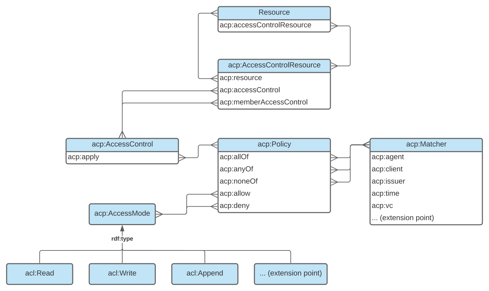

1. Introduction
This section introduces ACP with an overview of key terminology, an explanation of the conventions used in this document, example graphs to illustrate basic concepts of resource access description and validation, and a diagram representing the main elements of the ACP data model.
1.1. RDF terminology
This document uses the terms resource, property, RDF vocabulary, namespace, namespace IRI, namespace prefix, RDF graph, RDF triple, IRI, literal, blank node, node of an RDF graph, RDF term, subject, predicate, and object of RDF triples, datatype, and IRI and literal term equality as defined in RDF 1.1 Concepts and Abstract Syntax RDF11 CONCEPTS.
1.2. RDF vocabularies and namespace IRIs
This document uses the following RDF vocabularies and corresponding namespace prefix bindings:
| Prefix | Namespace |
|---|---|
acp:
|
http://www.w3.org/ns/solid/acp#
|
acl: |
http://www.w3.org/ns/auth/acl#
|
ex: |
https://example.org/
|
ldp: |
http://www.w3.org/ns/ldp#
|
rdf: |
http://www.w3.org/1999/02/22-rdf-syntax-ns#
|
rdfs: |
http://www.w3.org/2000/01/rdf-schema#
|
owl: |
http://www.w3.org/2002/07/owl#
|
1.3. ACP terminology
This section is non-normative.
- Context graph
- Context graphs describe the attributes of resource access instances. Those attributes can be matched to sets of conditions defined in the form of an authorization graph in order to determine Access Modes granted over resources.
- Authorization graphs authoritatively define the conditions for granting Access Modes over resources through Access Controls, Policies and Matchers. The result of applying an authorization graph to a described instance of resource access is an access grant graph.
- Access grant graph
- Access grant graphs describe sets of granted access modes over resources in the context of resource access instances.
1.4. Example graphs
This section is non-normative.
Throughout this document, color-coded boxes contain the RDF representation of example context graphs, authorization graphs, and access grant graphs serialized in Turtle. Those graphs use a mix of IRIs and blank nodes where applicable to better show the range of possible representations.
The following example context graph describes an instance of resource access and could be translated as: "Bob is trying to access resource X using client application Y with his identity asserted by identity provider Z.".
# This box contains a context graph
# It describes an instance of resource access
[]
acp:agent ex:Bob ;
acp:target ex:resourceX ;
acp:client ex:ClientApplicationY ;
acp:issuer ex:IdentityProviderZ .
The following example
authorization graph
authoritatively defines the conditions of access to resource X and
could be translated as:
"Access to resource X is mandated by one Access Control that
applies one Policy which allows access mode
acl:Read when the agent matcher is satisfied that
Alice or Bob are the agent trying to access resource X.".
# This box contains an authorization graph
# It describes the conditions required for accessing a resource
[]
a acp:AccessControlResource ;
acp:resource ex:resourceX ;
acp:accessControl [
a acp:AccessControl ;
acp:apply [
a acp:Policy ;
acp:allow acl:Read ;
acp:anyOf [
a acp:AgentMatcher ;
acp:agent ex:Alice, ex:Bob ;
]
]
] .
The following example
access grant graph is
the result of applying the previous example authorization graph
which defines access to resource X to the previous example context
graph which describes an instance of access to target resource X.
Bob is matched as the context agent and since it defines no further
restrictions, the policy allowing acl:Read is
satisfied. The following access grant graph could be read as:
"The access mode acl:Read is granted to Bob whom
requested access to resource X using client application Y and
whose identity was asserted by identity provider Z.".
# This box contains an access grant graph
# It describes in context the granted access over a resource
[]
acp:grant acl:Read ;
acp:context [
acp:agent ex:Bob ;
acp:target ex:resourceX ;
acp:client ex:ClientApplicationY ;
acp:issuer ex:IdentityProviderZ ;
] .
1.5. Data model
This section is non-normative.
The following diagram illustrates the main elements of ACP.
1.6. Ontology
All terms defined by the Access Control Policy Language are present in a non-normative RDF representation of the ACP ontology serialized in turtle.
2. Conformance
All assertions, diagrams, examples, and notes are non-normative, as are all sections explicitly marked non-normative. Everything else is normative.
The key words MUST, MUST NOT, REQUIRED, SHALL, SHALL NOT, SHOULD, SHOULD NOT, RECOMMENDED, MAY, and OPTIONAL, are to be interpreted as defined in RFC 2119.
Only UPPERCASE usage of the key words defined in RFC 2119 have special meanings, as per RFC 8174.
3. Context Graph
This section introduces the ACP terms used to describe instances of resource access.
3.1. Context
-
acp:Context - Instances of the Context class describe instances of resource access.
-
acp:attribute - The attribute properties defined by ACP describe instances of resource access.
-
acp:target - The target attribute describes requested resources.
-
acp:mode - The mode attribute describes requested modes of access.
-
acp:agent - The agent attribute describes agents initiating requests.
-
acp:creator - The creator attribute describes creators of requested resources.
-
acp:owner - The owner attribute describes owners of requested resources.
-
acp:client - The client attribute describes client applications used to request resources.
-
acp:issuer - The issuer attribute describes identity providers used to assert the identity of agents requesting resources.
-
acp:time - The time attribute describes times of resource access requests.
-
acp:vc - The vc attribute describes verifiable credentials presented as part of resource access requests.
3.1.1. Example Context
The following example context graph denotes instances of resource access over resource X initiated by Bob.
[]
a acp:Context ;
acp:agent ex:Bob .
The following example context graph denotes instances of resource access over resource X initiated by Bob using client application Y where Bob's identity is asserted by identity provider Z, Bob is the owner of resource X, and Alice is the creator of resource X.
ex:contextA
acp:agent ex:Bob ;
acp:target ex:resourceX ;
acp:owner ex:Bob ;
acp:creator ex:Alice ;
acp:client ex:ClientApplicationY ;
acp:issuer ex:IdentityProviderZ .
The following example context graph denotes instances of resource access where client application X or client application Y are used and identity is asserted by identity provider Z.
[
acp:client ex:ClientApplicationX, ex:ClientApplicationY ;
acp:issuer ex:IdentityProviderZ ;
] .
3.2. Context extensibility
Sub-properties of acp:attribute can be created to fit
the specific resource access description requirements of
applications.
3.2.1. Example Context extension
Let's imagine a property ex:tag defined as a an
rdfs:subPropertyOf acp:attribute that would describe
tags applied to requested resources. If such a property was
defined, then the following example context graph would denote
instances of resource access over resource X initiated by Bob
where resource X was tagged ex:Music and
ex:FavouriteRecord.
ex:contextA
acp:agent ex:Bob ;
acp:target ex:resourceX ;
ex:tag ex:Music, ex:FavouriteRecord .
4. Authorization Graph
This section introduces the ACP terms used to control access to resources.
4.1. Access Control Resource
-
acp:AccessControlResource - Instances of the Access Control Resource (ACR) class connect resources to their Access Controls.
-
acp:resource -
The resource property connects
ACRs
to
resources
they control. It is the inverse of
acp:accessControlResource. -
acp:accessControl - The access control property connects ACRs to access controls.
-
acp:memberAccessControl - The member access control property connects ACRs of member resources to access controls.
4.1.1. Example Access Control Resource
The following example authorization graph means that access to resource X is controlled by both Access Controls B and C; furthermore, access to members of resource X is controlled by Access Control D.
ex:accessControlResourceA
acp:resource ex:resourceX ;
acp:accessControl ex:accessControlB, ex:accessControlC ;
acp:memberAccessControl ex:accessControlD .
4.2. Access Control
-
acp:AccessControl - Instances of the Access Control class connect Access Control Resources to their Policies.
-
acp:apply - The apply property connects Access Controls to the Policies they apply to resources.
-
acp:access - The access property connects Access Controls to the Policies they apply to ACRs.
4.2.1. Example Access Control
The following example authorization graph means that access to resource X is controlled by Policy C while access to ACR A is controlled by Policy D.
ex:accessControlResourceA
acp:resource ex:resourceX ;
acp:accessControl [
acp:apply ex:policyC ;
acp:access ex:policyD ;
] .
The following two example authorization graphs mean that access to resource X is controlled by Policy D and Policy E.
ex:accessControlResourceA
acp:resource ex:resourceX ;
acp:accessControl ex:accessControlB, ex:accessControlC .
ex:accessControlB
acp:apply ex:policyD .
ex:accessControlC
acp:apply ex:policyE .
[]
acp:resource ex:resourceX ;
acp:accessControl ex:accessControlF .
ex:accessControlF
acp:apply ex:policyD, ex:policyE .
4.3. Policy
-
acp:Policy - Instances of the Policy class connect Access Controls to allowed and denied Access Modes as well as sets of Matchers describing instances of resource access.
-
acp:allow - The allow property connects Policies to the Access Modes they allow if satisfied.
-
acp:deny - The deny property connects Policies to the Access Modes they deny if satisfied.
-
acp:allOf - The all of property connects Policies to the set of Matchers that must all match a resource access description for the policy to be satisfied.
-
acp:anyOf - The any of property connects Policies to the set of Matchers any of which must match a resource access description for the policy to be satisfied.
-
acp:noneOf - The none of property connects Policies to the set of Matchers none of which must match a resource access description for the policy to be satisfied.
4.3.1. Example Policy
The following example authorization graph means that Policy A will allow Read for instances of resource access satisfying both Matcher B and Matcher C.
ex:policyA
acp:allow acl:Read ;
acp:allOf ex:matcherB, ex:matcherC .
The following example authorization graph means that a Policy will deny Write for instances of resource access satisfying either Matcher B or Matcher C.
[]
acp:deny acl:Write ;
acp:anyOf ex:matcherB, ex:matcherC .
The following example authorization graph means that Reading and Writing resource X will be allowed for instances of resource access satisfying Matcher A and not Matcher B.
[
acp:resource ex:resourceX ;
acp:accessControl [
acp:apply [
acp:allow acl:Read, acl:Write ;
acp:anyOf ex:matcherA ;
acp:noneOf ex:matcherB ;
] ;
] ;
] .
4.3.2. Policy satisfaction
Policies are satisfied via the acp:allOf,
acp:anyOf and acp:noneOf predicates
which act respectively as intersection, union and exclusion
operators.
A policy MUST be considered satisfied if and only if:
- It references at least one matcher via a condition; and
- At least one matcher it references matches the given context; and
- All the conditions it defines are satisfied.
Given that the acp:noneOf condition excludes
matches, a policy without a satisfied allOf or anyOf condition
is never satisfied.
The following example authorization graph denotes that policy A will be satisfied if both matcher B and C are satisfied and either matcher D or E are satisfied and matcher F is not satified.
ex:policyA
acp:allOf ex:matcherB, ex:matcherC ;
acp:anyOf ex:matcherD, matcherE ;
acp:noneOf ex:matcherF .
An access mode MUST be granted over a resource if and only if in the set of policies mandating access over it:
- A satisfied policy allows it; and
- No satisfied policy denies it.
ACP doesn't define its own access modes, instead it reuses
access modes defined elsewhere. For example, it could use the
ACL ontology
defined acl:Read; acl:Write; and
acl:Append. Access modes can be defined to fit the
specific needs of an application, see also:
Access Grant Extensibility.
The following example authorization graph denotes that access
control A, assuming that both policy B and C are satisfied will
grant access mode acl:Read over the resource it
mandates control over and will not grant access mode
acl:Write even though policy B allows it because
policy C denies it.
ex:accessControlA
acp:apply ex:policyB, ex:policyC .
ex:policyB
acp:allow acl:Read, acl:Write .
ex:policyC
acp:deny acl:Write .
4.4. Matcher
-
acp:Matcher - Instances of the Matcher class define the instances of resource access satisfying them. Each resource access attribute defined MUST be matched for a Matcher to be satisfied.
-
acp:AgentMatcher - Instances of the Agent Matcher class define a set of agents, one of which MUST be matched for an instance of resource access to satisfy the matcher.
-
acp:PublicAgent - The Public Agent named individual can be used in an Agent Matcher to signify that any agent, defined or not, MUST satisfy the Agent Matcher.
-
acp:AuthenticatedAgent - The Authenticated Agent named individual can be used in an Agent Matcher to signify that any authenticated agent MUST satisfy the Agent Matcher.
-
acp:CreatorAgent - The Creator Agent named individual can be used in an Agent Matcher to signify that any authenticated agent that created the requested access controlled resource MUST satisfy the Agent Matcher.
-
acp:OwnerAgent - The Owner Agent named individual can be used in an Agent Matcher to signify that any authenticated agent that owns the requested access controlled resource MUST satisfy the Agent Matcher.
-
acp:ClientMatcher - Instances of the Client Matcher class define a set of clients, one of which MUST be matched for an instance of resource access to satisfy the matcher.
-
acp:PublicClient - The Public Client named individual can be used in a Client Matcher to signify that any client, defined or not, MUST satisfy the Client Matcher.
-
acp:IssuerMatcher - Instances of the Issuer Matcher class define a set of issuers, one of which MUST be matched for an instance of resource access to satisfy the matcher.
-
acp:PublicIssuer - The Public Issuer named individual can be used in an Issuer Matcher to signify that any issuer, defined or not, MUST satisfy the Issuer Matcher.
-
acp:TimeMatcher - Instances of the Time Matcher class define a range of time that MUST be matched for an instance of resource access to satisfy the matcher.
-
acp:VerifiableCredentialsMatcher - Instances of the Verifiable Credentials Matcher class defines a set of types of Verifiable Credentials, one of which MUST be matched for an instance of resource access to satisfy the matcher.
4.4.1. Example Matcher
The following example authorization graph means that Agent Matcher A will be satisfied when either Alice or the owner of the access controlled resource are requesting access.
ex:matcherA
acp:agent ex:Alice, acp:OwnerAgent .
The following example authorization graph means that the defined Client Matcher will be satisfied when matched against a context graph where the client used to access the access controlled resource is client B.
[
acp:client ex:clientB ;
] .
The following example authorization graph means that Issuer Matcher A will be satisfied when matched against a context graph where the identity provider used to assert the identity of the agent requesting access to the access controlled resource is issuer B.
ex:matcherA
acp:issuer ex:issuerB .
The following example authorization graph means that the defined Verifiable Credentials (VC) Matcher A will be satisfied when matched against a context graph where one of the presented verifiable credentials is an instance of credential B, is valid and has been issued to the agent requesting the resource.
[]
acp:vc ex:credentialB .
The following example authorization graph means that matcher A will be satisfied only if either Alice or Bob are the agent requesting resource access and their identity was asserted by Identity Provider B.
ex:matcherA
a acp:Matcher, acp:AgentMatcher, acp:IssuerMatcher ;
acp:agent ex:Bob, ex:Alice ;
acp:issuer ex:IdentityProviderB .
The following example authorization graph means that the defined matcher will be satisfied only if Alice, whose identity is asserted by Identity Provider B, is the agent requesting resource access and is doing so presenting a VC that is a verified instance of credential A issued to Alice.
[
acp:agent ex:Alice ;
acp:issuer ex:IdentityProviderB ;
acp:vc ex:credentialA ;
] .
4.5. Matcher extensibility
All sub-properties of acp:attribute correspond implicitly to their own type of matcher. In other words, any attribute used as a matching attribute MUST be matched either via IRI or literal term equality or via more complex algorithms defined to fit the specific requirements of applications. Sub-properties of acp:attribute can be created to fit the specific resource access control requirements of applications.
4.5.1. Example Matcher extension
Given the property ex:tag previously defined in the
example context extension
as a an rdfs:subPropertyOf acp:attribute that
describes tags applied to requested resources, the following
example context graph would mean that Policy 1 allows Read and is
satisfied by instances of resource access initiated over a
resource that was tagged ex:FavouriteRecord or
ex:Wishlist.
ex:policy1
acp:allow acl:Read ;
acp:anyOf [
ex:tag ex:FavouriteRecord, ex:Wishlist ;
] .
5. Access Grant Graph
This section introduces the ACP terms used to grant access to resources.
5.1. Access Grant
-
acp:AccessGrant - Instances of the Access Grant class define sets of Access Modes granted in particular Contexts.
-
acp:context - The context property connects Access Grants to the Contexts in which they're given.
-
acp:grant - The grant property connects Access Grants to the Access Modes they grant.
5.1.1. Example Access Grant
The following example access grant graph means that Access Modes
acl:Read and acl:Write have been granted
to Bob for accessing resource X.
[]
acp:grant acl:Read, acl:Write ;
acp:context [
acp:agent ex:Bob ;
acp:target ex:resourceX ;
] .
5.2. Access Mode extensibility
-
acp:AccessMode - The ACP specification does not define Access Modes. Instead, any Access Mode granted is an instance of the Access Mode class. Access Modes and their granularity can be tailored to the needs of an application. Access Modes defined in other vocabularies (for example ACL) can also be used.
5.2.1. Example Access Mode
The following example access grant graph means that
acl:Read and ex:Delete are Access Modes;
furthermore, it means that acl:Read and
ex:Delete have been granted to Bob for accessing
resource X.
[]
acp:grant acl:Read, ex:Delete ;
acp:context [
acp:agent ex:Bob ;
acp:target ex:resourceX ;
] .
6. Server implementation
This section introduces how servers must advertise capabilities, manage resources, restrict editing of access control resources and enable access control resource discovery.
6.1. Capabilities discovery
When a server wants to enable applications to discover its ACP capabilities, it MUST do so via link headers.
The server MUST advertise the access modes it supports by responding
to HTTP OPTIONS requests over ACP access control resources including
a Link header with the rel value of
http://www.w3.org/ns/solid/acp#grant and the full URI
of an access mode as link target [RFC8288]. The server MUST produce
one such Link header for each access mode it supports.
For example, if a server supports the ACL read, write and append
access modes, it should advertise it by responding to HTTP OPTIONS
requests over ACP access control resources including three link
headers with rel value of
http://www.w3.org/ns/solid/acp#grant and respectively
targets of http://www.w3.org/ns/auth/acl#Read,
http://www.w3.org/ns/auth/acl#Write and
http://www.w3.org/ns/auth/acl#Append in order to make
it explicit which set of access modes are understood and relevant
when editing ACP policies.
The server MUST advertise the request attributes it supports by
responding to HTTP OPTIONS requests over ACP access control
resources including a Link header with the rel value of
http://www.w3.org/ns/solid/acp#attribute and the full
URI of an acp attribute as link target [RFC8288]. The server MUST
produce one such Link header for each request attribute it supports.
For example, if a server supports the ACP agent, client and issuer
request attributes, it should advertise it by responding to HTTP
OPTIONS requests over ACP access control resources including three
link headers with rel value of
http://www.w3.org/ns/solid/acp#attribute and
respectively targets of
http://www.w3.org/ns/solid/acp#agent,
http://www.w3.org/ns/solid/acp#client and
http://www.w3.org/ns/solid/acp#issuer in order to make
it explicit which set of request attributes are understood and
relevant when editing ACP matchers.
6.2. Resource management
Access control resources MUST be server managed.
There is a one to one relationship between an access control resource and the resource it mandates access permissions over. Therefore, when a resource is created or deleted, the access control resource corresponding to it SHOULD be created or deleted accordingly.
Access controls, policies and matchers can all be kept in separate resources that have their own access control resource mandating access permissions over them.
As long as an access control, a policy or a matcher is referenced by an access control resource, it SHOULD not be deleted. However, if such consistency cannot be enforced and an access control, a policy or a matcher ceased to be accessible, then access permissions resolution should fail to its default behaviour of only granting read and write access to the failing access control resource to its owner(s); read and write access should not be implicitly granted to a resource whose access control resolution fails, even to owners of that resource.
6.3. Access Control Resource editing
The owner of a storage is implicitly considered an owner of all the resources in the URI space corresponding to storage.
An owner of a resource is implicitly considered an owner of its associated access control resource.
An owner of an access control resource implicitly has full read and write access over it.
To add an access control to or remove an access control from an access control resource, agents that are not owners of that access control resource need read and write access to both the access control resource itself and to the resource where said access control is defined. In other words, access controls defined as part of a separate resource can be protected from unwanted edits in and out of access control resources by setting adequate permissions in their own access control resource.
6.4. Access Control Resource discovery
When a server wants to enable applications to discover the ACP
access control resource associated with a given resource, the server
MUST advertise the ACP access control resource that is associated
with that resource by responding to HTTP requests over the resource
including a Link header with the rel value
of acl (acl Link Relation) and the ACP access control
resource as the link target [RFC8288]. The same mechanism is used in
Web Access Control resource discovery.
A server responding to an HTTP request over an ACP access control
resource MUST include a Link header with the
rel value of type and the
acp:AccessControlResource URI as link target.